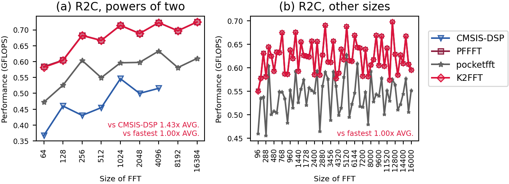

QEMU mps2-an386
, L1d cache 64 KiB (2 instances), L2 cache 1 MiB (2 instances), L3 cache 32 MiB (1 instance), 4 CPUs
, a VM on Microsoft
.
Linux runnervm7aw5e 7.0.0-1017-azure #17~24.04.1-Ubuntu SMP PREEMPT Thu Sep 24 18:46:57 UTC 2026 x86_64 x86_64 x86_64 GNU/Linux
Runner image: ubuntu24 20261101.360.1
Emulated: qemu-system-arm -M mps2-an386 -nographic -monitor none -serial none -semihosting-config enable=on,target=native -kernel
Rounds: 5.
Compilers and flags (unless overridden): C GNU 13.2.1 ;
C++ GNU 13.2.1 .
Libraries: CMSISDSP 1.18.0, CMSISCORE 6.4.0, FFTW 3.3.10, IPP 2026.1.0, KFR 7.2.0, NE10 1f059a764d0e, K2FFT commit 5998ca16072a.
Raw data files: cortex-m4-qemu_mps2-an386.counts.speed cortex-m4-qemu_mps2-an386.counts.tbl cortex-m4-qemu_mps2-an386.info cortex-m4-qemu_mps2-an386.sysinfo cortex-m4-qemu_mps2-an386.ctest cortex-m4-qemu_mps2-an386.verdicts cortex-m4-qemu_mps2-an386.fastest
Checks: passed. K2FFT: unbeaten at all 67 sizes.
new: cortex-m4-qemu_mps2-an386 has no baseline
QEMU instruction counts, one round: codes no rival beat by more than 15%: